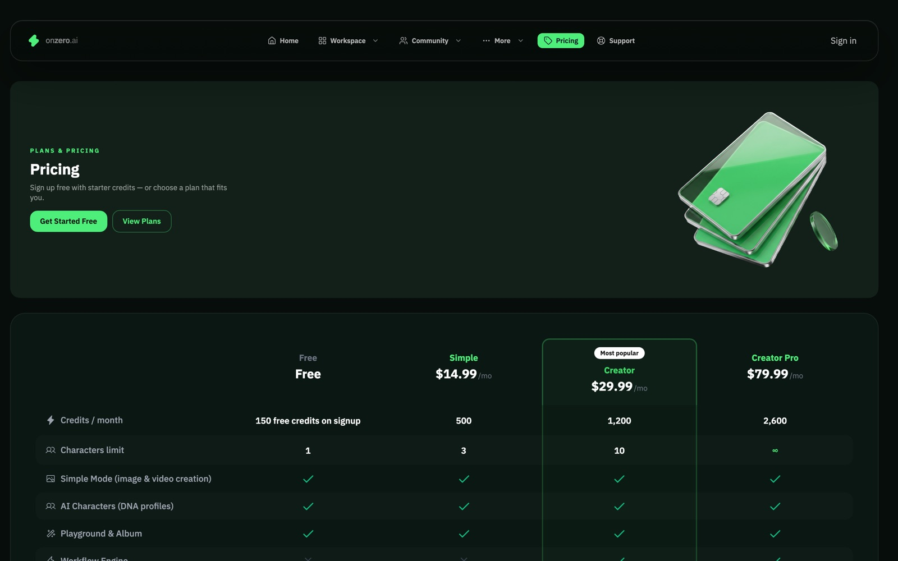
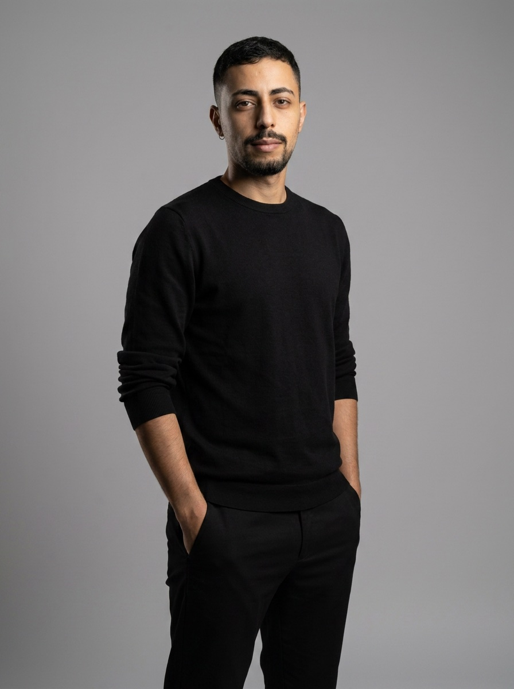

The screens
Positioning
The promise is stated as a constraint, not a feature: “Same face. Every post.” That single line names the failure mode of every other generative tool and claims the fix. Below it the four primitives - characters, assets, workflows, playground - and a terminal block showing the platform connecting to any MCP client, because a real part of the audience wants to drive it from their editor rather than a UI.

Community
The library is the proof. Discover shows characters and creations from the community - every avatar rendered from a locked identity, which is the argument made visually rather than in copy. Challenges turn that into a loop: a themed brief, public entries and a leaderboard, so the platform has a reason to be opened on a day when nobody has a campaign to make.


Business model
Generation costs money per call, so the model is credits rather than seats. Pricing has to make an unfamiliar unit legible - what a credit buys, and what a month of real use actually costs - which is a copy problem as much as a layout one.

Identity lock in practice
The portrait in this site's hero was produced with OnZero from a DNA-locked character, then cut out with the platform's own matting rather than a prompt for a white background. That's the whole argument in one asset: the same face, on demand, in any scene - and a production-grade cutout to composite with.
